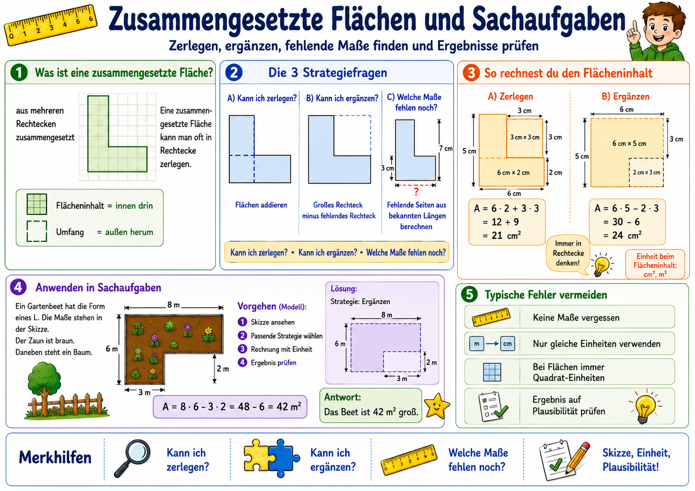

Der rote Faden
Die 3 Strategiefragen
Teile die Figur in Rechtecke und addiere die Flaechen.
Denke ein grosses Rechteck und ziehe den fehlenden Teil ab.
Fehlende Seiten findest du durch Subtrahieren bekannter Laengen.
Mathematik Klasse 5 - Modul 3
Zerlegen, ergaenzen, fehlende Masse finden und Ergebnisse pruefen: hier wird aus einer unuebersichtlichen Figur wieder eine klare Rechteckaufgabe.

Der rote Faden
Teile die Figur in Rechtecke und addiere die Flaechen.
Denke ein grosses Rechteck und ziehe den fehlenden Teil ab.
Fehlende Seiten findest du durch Subtrahieren bekannter Laengen.
Strategielabor
Rechnung: 3 * 5 + 3 * 2 = 21 cm^2
Rechnung: 6 * 5 - 2 * 3 = 24 cm^2
Idee: ganze Laenge minus bekannte Teilstrecke
Sachaufgabenmodell
Typische Fehler
Training
Diagnose
Punkte: 0 / 10
Noch nicht gestartet.